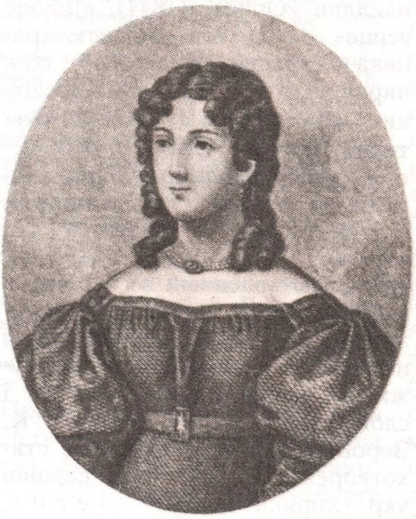

Poesia del giorno · 1° dicembre


Elisabetta Kulmann
Elisabeth Kulmann, figlia di un ufficiale morto povero, a sei anni parlava russo e tedesco; a dieci cominciò l’italiano, la lingua che preferì a tutte. Imparò poi il greco antico e moderno, il latino, l’inglese, lo spagnolo, il portoghese, e tradusse Anacreonte in cinque lingue. Morì di tisi a diciassette anni.
Scrisse i suoi versi in russo, in tedesco e direttamente in italiano. Schumann ne mise in musica sette Lieder. Questo lamento è il canto di una madre che ha perso la figlia; sedici settenari, e l’ultimo verso è il più duro. Elisabetta morì prima di sua madre.
Lamento d’una madre
M’abbandonasti, o figlia, Sola per te son io, Da che moristi, io sono In suol straniero a me! Fa che la Parca tronchi Di mia vita lo stame, Fa che ’l destin mi chiami Senz’ indugiar a te! A me nojoso è il sole, Che ’l mio dolor rischiara; Mi soffoca quell’aura, Che rinfrescar mi vuol. Non avrò mai riposo, Cor mio, da te lontana: Ah, che non posso io teco Me viva sotterrar!
da Saggi poetici di Elisabetta Kulmann con la vita, il ritratto ed il monumento dell’autrice, a cura di Francesco Longhena, 1847, p. 224 · stampa su Internet Archive